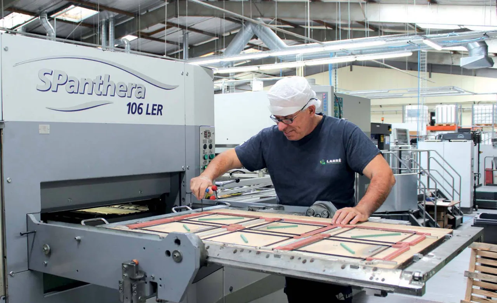
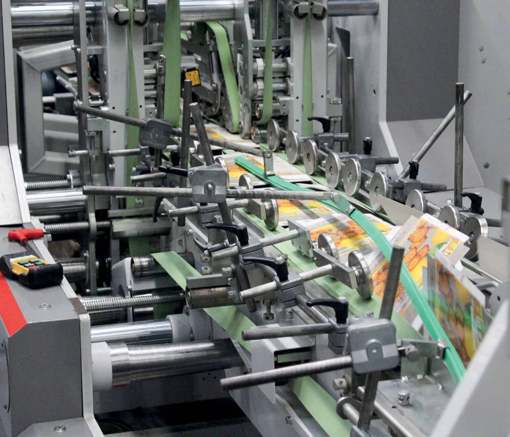

Cartonnages industriels · Bayonne
La fabriqued’une boîte.
Quatre encres, une feuille de carton, un étui. Faites défiler pour voir la matière devenir objet.

01 / 05Impression
La presse offset
Au margeur, les feuilles de carton vierge sont empilées sur une palette.
Vue en coupe
Le film montre l’impression, la découpe et le rainage, le collage de la patte latérale, le départ des étuis à plat et l’ouverture d’un étui à la réception. Une transcription suit l’album de l’atelier.
Photographies de l’entreprise
L’atelier de Bayonne.
Quatre générations de cartonnage à Bayonne. Voici les machines qui ont inspiré les coupes du film.




Photographies publiées par l’entreprise · cartonnages-larre.fr
Lire le parcours de la boîte
- Impression offset. Des ventouses prennent la feuille du dessus de la pile. Sur la table de marge, les feuilles se chevauchent, s’arrêtent contre les taquets frontaux et sont alignées sur le côté. Dans chacun des quatre groupes, le blanchet transfère une encre au carton. Chaque feuille porte quatre poses imprimées et rejoint la pile de réception.
- Découpe et rainage. La palette imprimée est amenée au margeur de l’autoplatine, qui presse chaque feuille contre la forme. Les filets coupants détachent le contour, les filets de rainage marquent les futurs plis. Pendant que les pinces gardent la feuille en repère, des poinçons chassent les déchets vers un bac. Les quatre poses se déposent ensuite à plat sur leurs piles.
- Pliage-collage. Le margeur prend les poses par le dessous de la pile, intérieur visible. Sous une buse fixe, un filet de colle est déposé sur la patte latérale. Les guides rabattent les pans puis les courroies maintiennent le joint sous pression.
- Expédition. Les étuis collés sont empilés à plat dans une caisse. Ses petits rabats se couchent, puis les grands, et un ruban adhésif ferme la jonction. Les caisses sont chargées pour le transport.
- Chez le client. Un étui sort de la caisse. Ses faces s’écartent, sa section devient rectangulaire. Le fond se ferme, puis le couvercle.
Le film suit un étui d’étude. Ses décors et la réception chez le client sont des reconstitutions. Découvrir les procédés de l’entreprise
Pour voir les machines en fonctionnement, retrouvez le départ de la feuille, la séparation des poses et le pliage d’un étui dans les démonstrations des constructeurs. Margeur Komori · Découpe BOBST · Pliage BOBST